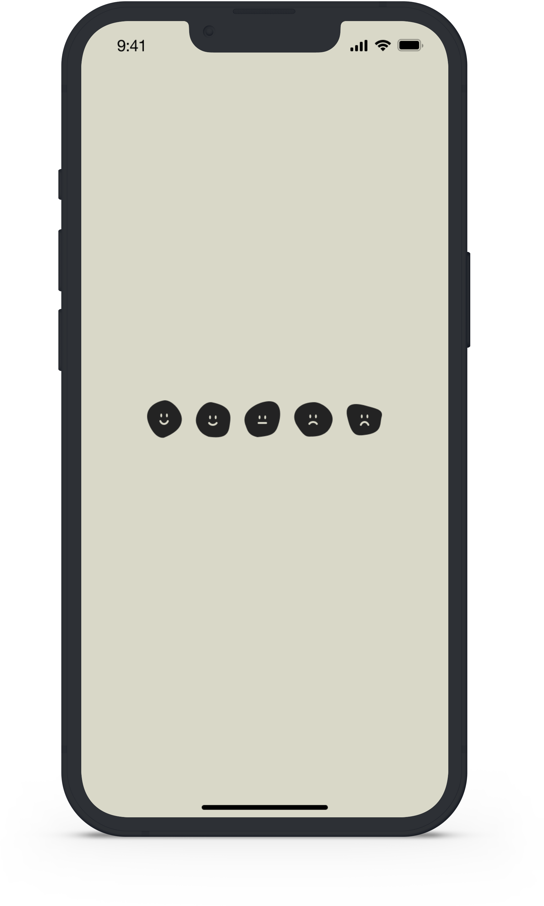

Slow your life
 Ver proyecto completoProyecto
Aplicación vinculada al concepto Wellness dirigida hacia estudiantes que deseen crear una rutina que les permita alcanzar sus objetivos académicos.
Funciones
- User Researcher
- Information Architect
- Visual Designer
- Interaction Designer
Detalles
Proyecto individual totalmente libre con una duración de 3 semanas que consistió en crear una aplicación dentro de la categoría Wellness. Para ello, fue necesario realizar un arduo trabajo de investigación para encontrar uno de los sectores de la población que más necesitada se hallase. Una vez determinado, se ahondó en sus problemáticas y necesidades. Finalmente, el proyecto trató el bienestar de los estudiantes, ayudándoles a cumplir sus metas académicas, mejorar su salud mental y obtener motivación mediante la practica del “Slow life”.